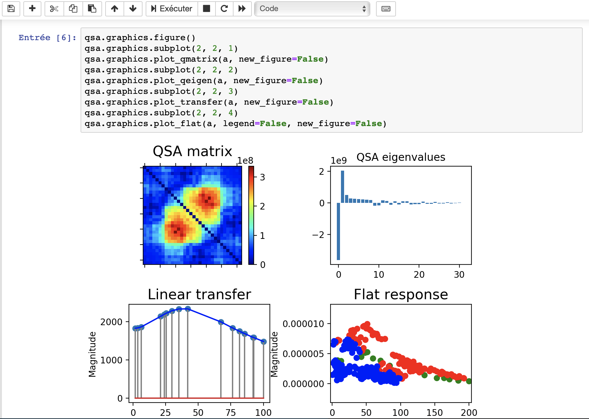

It is recommended to install Python 3.7 with pip3 on the computer.
It is a good practice to work in isolation inside a python3 virtual environment:
python3 -m venv venv
source venv/bin/activateThe package qsa provides QSA analysis of signals, including JSON files exported from
RTXI
modules qsa_stimulation and qsa_response. It can be installed using pip3:
pip3 install qsaDependent packages such as numpy and matplotlib should be automatically
installed.
The package jupyter provides notebooks (cf. jupyter.org)
to facilitate data analysis and visualization. It can be installed using pip3:
pip3 install jupyterThis tutorial shows how to analyze an RTXI experiment using python3 interpreter. First,
it is
necessary to import the package qsa
>>> import qsaThe RTXI module qsa_response exports data to JSON files that can be read with Python.
We illustrate the procedure on the JSON file sample_rtxi.json that was recorded on a Hodgkin-Huxley model.
>>> e = qsa.rtxi.Experiment('sample_rtxi.json')The result contained in the variable e represents an RTXI experiment as an array of
measurements. Each measurement corresponds to the multisinusoidal part of a single trace, the
number of
traces being specified during the experiment in the RTXI module qsa_stimulation.
We check the number of measurements:
>>> e.count()
4It is then possible to get a measurement at a specified index:
>>> m = e.get_measurement(0)or to average several measurements given a list of indices, the result is still a measurement:
>>> m = e.average([0,1,2,3])The quadratic sinusoidal analysis of a measurement is constructed as an object:
>>> a = qsa.analysis.Analysis(m)All computations are done automatically and become available as soon as the analysis has been created.
For example, the linear transfer function is given by
>>> a.linear
array([1829.2884483 +10.63159916j, 1838.23978067 +20.01321179j,
1863.86101728 +31.55688678j, 2136.01715592 -117.14561866j,
2185.25028265 -194.20445702j, 2208.77698464 -245.55706613j,
2251.06173467 -394.66446218j, 2252.11802882 -609.80204606j,
2166.54066271 -875.29384477j, 1455.36248296-1364.71568196j,
1220.6203661 -1373.41104336j, 1104.839442 -1358.4758122j ,
1026.35388058-1342.07808313j, 909.32235369-1302.78013391j,
902.56651136-1303.50788013j, 793.49102668-1255.22028481j])Similarly, the eigenvalues of the QSA matrix are given by
>>> a.eigen
array([-3.63693577e+09, -1.74043293e+08, -1.56065168e+08, -1.16134436e+08,
-1.04166609e+08, -9.24392627e+07, -8.24809727e+07, -7.26682320e+07,
-6.61480154e+07, -6.11734428e+07, -4.77181840e+07, -4.62928536e+07,
-3.51827827e+07, -2.94613835e+07, 4.82172343e+06, 2.15923335e+07,
4.31292141e+07, 5.42112014e+07, 7.14435605e+07, 9.77941074e+07,
9.89383669e+07, 1.09815693e+08, 1.27007425e+08, 1.55668432e+08,
1.75270167e+08, 2.01746005e+08, 2.16067839e+08, 2.44813285e+08,
2.63213156e+08, 2.83859596e+08, 5.03610375e+08, 2.04790793e+09])Data visualization is directly implemented using the Python package matplotlib.
Explicit use of this package is not required since transparent functions are provided.
With the Python command line interpreter, it is first necessary to enable interactive graphics:
>>> qsa.graphics.ion()Then, for example, the linear transfer function can be plot as follows:
>>> qsa.graphics.plot_transfer(a)Similarly, the QSA matrix can be plot as follows:
>>> qsa.graphics.plot_qmatrix(a)It is also possible to create a figure with 2 subplots, specifying option new_figure=False
to
prevent creation of a new figure for each individual plot:
>>> qsa.graphics.figure()
>>> qsa.graphics.subplot(1, 2, 1)
>>> qsa.graphics.plot_transfer(a, new_figure=False)
>>> qsa.graphics.subplot(1, 2, 2)
>>> qsa.graphics.plot_qmatrix(a, new_figure=False)The Jupyter notebook is similar to a Mathematica notebook, which provides an efficient way to make interactive computations including visualization.
It can be started from the shell command line:
jupyter notebookThe qsa library can be used with the Python command line interpreter as well as with
Jupyter
notebooks.
To enable graphics, do not use qsa.graphics.ion() but rather
%matplotlib notebookat the beginning of the notebook.
An example of Jupyter notebook for QSA can be downloaded as sample_notebook.ipynb
